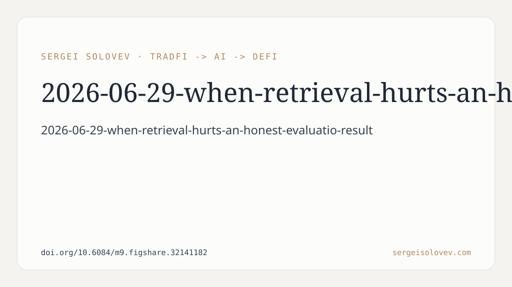

Our recent preprint, "When Retrieval Hurts: An Honest Evaluation of RAG for Solidity Vulnerability Detection," available at https://doi.org/10.6084/m9.figshare.32141182, presents a systematic evaluation of Retrieval-Augmented Generation (RAG) within the specific context of multi-label vulnerability detection in Ethereum Solidity smart contracts. The core finding is clear: naive RAG, as implemented with generic embeddings and whole-contract chunking, does not provide a measurable benefit for this task and, in fact, can degrade performance.
Our work investigates a hybrid pipeline designed for Solidity vulnerability detection. This pipeline comprises three primary stages: a regex-based heuristic pre-screening, dense retrieval over a labeled knowledge base, and a two-stage LLM classifier (a judge followed by a verifier). We benchmarked three distinct configurations: a heuristic-only baseline, an LLM-only approach, and an LLM+RAG configuration. The evaluation was performed on the SolidiFI benchmark across six vulnerability classes.
A critical aspect of our methodology was the demonstration of sample size's impact on observed performance. We initially conducted experiments on a small evaluation set of n=100 samples. In this limited scenario, the LLM+RAG configuration appeared to improve Macro-F1 by +2.0% over the plain LLM-only approach. This result is consistent with many widely reported gains for RAG in other domains, suggesting a positive impact.
However, when we expanded the evaluation to a more robust sample size of n=250, the observed effect of RAG inverted. With this larger, more representative dataset, the same LLM+RAG configuration degraded Macro-F1 by -2.7% compared to the LLM-only baseline. This shift highlights a significant issue: initial positive results on small, potentially unrepresentative datasets can be misleading. The apparent "gain" from RAG on n=100 was not stable and did not generalize to a larger evaluation set.
It is important to note that while RAG, in its current naive form, proved detrimental or ineffective for this specific task, other components of our pipeline did yield stable improvements. Through careful heuristic tuning and prompt engineering for the LLM, we achieved a +15% F1 improvement over the heuristic-only baseline. This improvement was statistically stable across our evaluations. This indicates that LLM-based approaches, when carefully engineered and fine-tuned for the domain, can offer substantial benefits for Solidity vulnerability detection, independent of retrieval augmentation.
The observed degradation with RAG on the larger dataset leads us to the conclusion that when the retrieval signal is noisy, RAG can actively hurt performance. Our implementation utilized generic embeddings and whole-contract chunking. We hypothesize that this combination leads to the retrieval of irrelevant or weakly relevant information from the knowledge base, which then misleads or confuses the subsequent LLM stages. The lack of domain-specificity in the embeddings and the coarse-grained chunking likely contribute to this noisy signal. Retrieving an entire, potentially large, smart contract based on a generic embedding without understanding its specific vulnerable patterns can introduce more noise than signal.
This work does not suggest that RAG is inherently flawed, but rather that its naive application can be unproductive, or even counterproductive, in specific, complex domains like smart contract vulnerability detection. The promise of retrieval augmentation relies on the quality and relevance of the retrieved information. When this information is polluted or tangential, the LLM’s ability to correctly classify or identify vulnerabilities is compromised.
Our findings underscore the need for domain-adapted RAG strategies. We outline several directions for future research aimed at unlocking the potential of RAG in this area. These include: fine-tuning embeddings specifically for Solidity vulnerability detection, which would allow for more precise semantic alignment between queries and knowledge base entries; employing cross-encoder re-ranking to filter out less relevant retrieved documents before presenting them to the LLM; and adopting Abstract Syntax Tree (AST)-aware chunking, which would enable the retrieval of semantically meaningful code segments rather than arbitrary whole-contract chunks. These refinements could significantly improve the quality of the retrieved signal, thereby making RAG a beneficial component of vulnerability detection systems.
The takeaway is that robust evaluation, particularly concerning sample size, is critical when assessing new techniques like RAG. Initial positive indicators can be artifacts of evaluation limitations. For Solidity vulnerability detection, generic RAG, as implemented, does not currently deliver on its promise and can impede performance. Focused efforts on domain-specific adaptation are necessary to realize its potential.
Full preprint: https://doi.org/10.6084/m9.figshare.32141182